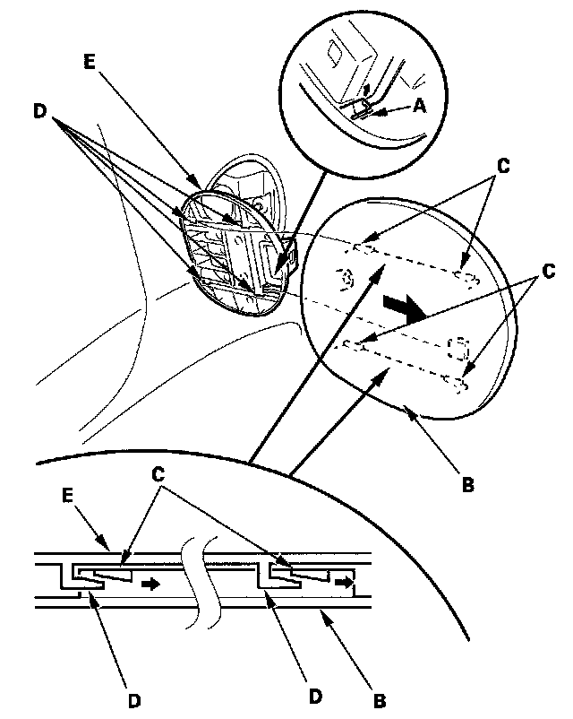

Fuel Fill Door
Fuel Fill Door ReplacementSpecial Tools Required
KTC trim tool set SOJATP2014 *
* Available through the American Honda Tool and Equipment Program
NOTE:
- Take care not to scratch the body.
- Use the appropriate tool from the KTC trim tool set to avoid damage when removing components.

1. While prying the hook (A) up with a trim tool, slide the fuel fill door (B) back to release four wedges (C) from the hooks (D) of the fuel fill door hinge (E), then remove the fuel fill door.
2. Install the door in the reverse order of removal, and note these items:
- Make sure the hooks are installed securely.
- Make sure there is no gap between the fuel fill door and hinge.